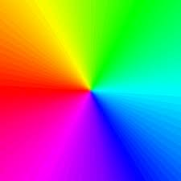

Here, the middle sections of the image are repeated to create the border:
border-image: url(border.png) 30 round;
Here, the middle sections of the image are stretched to create the border:
sd
Here is the original image:
Note: Internet Explorer 10, and earlier versions, do not support the border-image property.